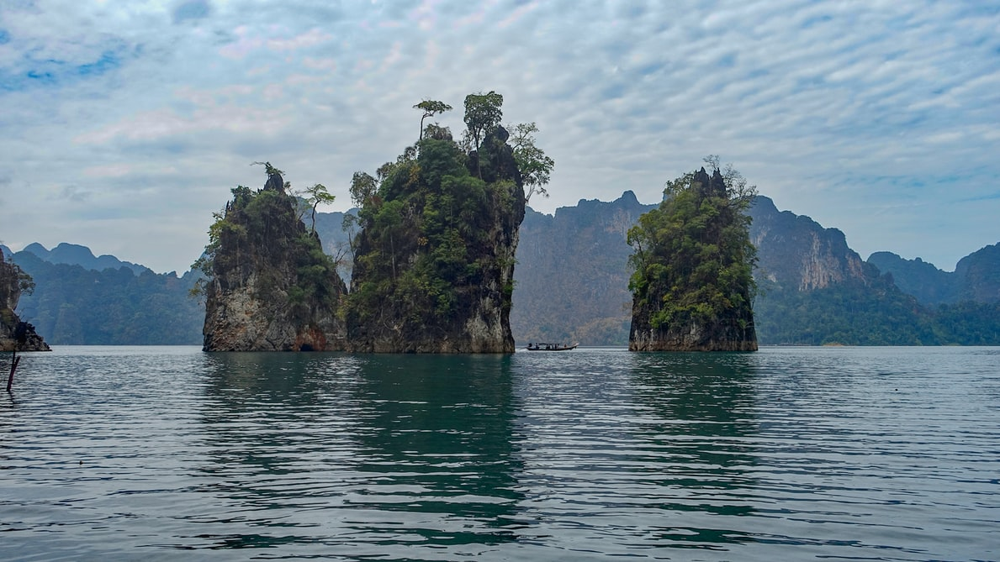

ที่มา : Wikipedia.org
อุทยานแห่งชาติเขาสก มีพื้นที่อยู่ในท้องที่อำเภอพนมและอำเภอบ้านตาขุน จังหวัดสุราษฎร์ธานี มีสภาพพื้นที่เป็นธรรมชาติอันกว้างใหญ่ปกคลุมไปด้วยป่าดิบชื้น ครอบคลุมพื้นที่เกือบทั้งหมดของเขตอุทยานแห่งชาติ ส่วนใหญ่เป็นภูเขาสูงต่ำสลับซับซ้อน พื้นที่ราบมีน้อย พื้นที่ส่วนหนึ่งด้านทิศเหนือบริเวณคลองพระแสงเป็นแหล่งน้ำขนาดใหญ่ เกิดขึ้นเนื่องจากการก่อสร้างเขื่อนรัชชประภา (เชี่ยวหลาน) ประกอบไปด้วยพรรณไม้และสัตว์ป่านานาชนิด อุทยานแห่งชาติเขาสกมีเนื้อที่ประมาณ 741.01 ตารางกิโลเมตร หรือ 463,131.43 ไร่ ได้มีการจัดตั้งเป็นอุทยานแห่งชาติเมื่อวันที่ 23 ธันวาคม 2523
อุทยานแห่งชาติเขาสก ดินแดนศูนย์กลางของ “ขุนเขาแห่งป่าฝน” เป็นผืนป่าดิบชื้นผืนใหญ่ที่สุดและมีความสำคัญของภาคใต้อันประกอบไปด้วยอุทยานแห่งชาติเขาสก เขตรักษาพันธุ์สัตว์ป่าคลองแสง เขตรักษาพันธุ์สัตว์ป่าคลองยัน เขตรักษาพันธุ์สัตว์ป่าคลองนาคา อุทยานแห่งชาติศรีพังงา และอุทยานแห่งชาติแก่งกรุง มีพื้นที่ทั้งสิ้น 2,296,879.5 ไร่ มีความหลากหลายทางชีวภาพสูง อุดมไปด้วยพืชพรรณมากมายหลายชนิด ทั้งพืชพรรณที่หายากและเป็นพืชเฉพาะถิ่น อันได้แก่ บัวผุด ปาล์มเจ้าเมืองถลางหรือปาล์มหลังขาวและปาล์มพระราหู นอกจากนี้ยังเป็นแหล่งที่อยู่อาศัยของสัตว์ป่านานาชนิด โดยเฉพาะพบสัตว์ป่าสงวนถึง 4 ชนิด คือ เก้งหม้อ เลียงผา สมเสร็จ และแมวลายหินอ่อน และประกอบกับสภาพพื้นที่มีทิวทัศน์ ที่สวยงาม มีความมหัศจรรย์ทางธรรมชาติทั้งน้ำตก หน้าผา ถ้ำ และ ทิวทัศน์เทือกเขาหินปูนที่ตั้งตระหง่านเหนือผืนน้ำอ่างเก็บน้ำเขื่อนรัชชประภา จนได้รับฉายาว่า กุ้ยหลินเมืองไทย